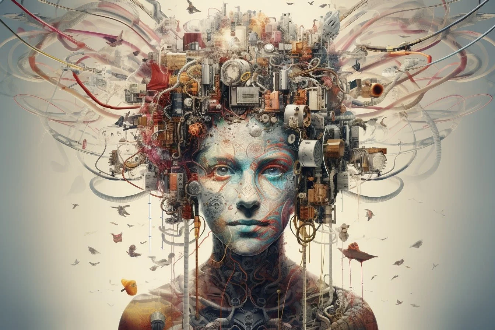
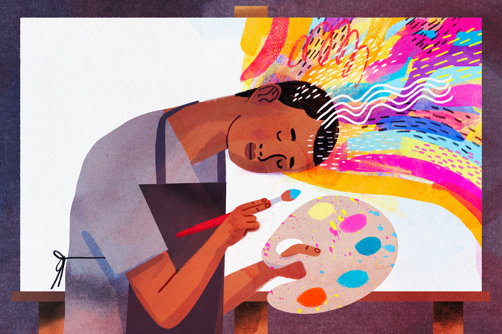
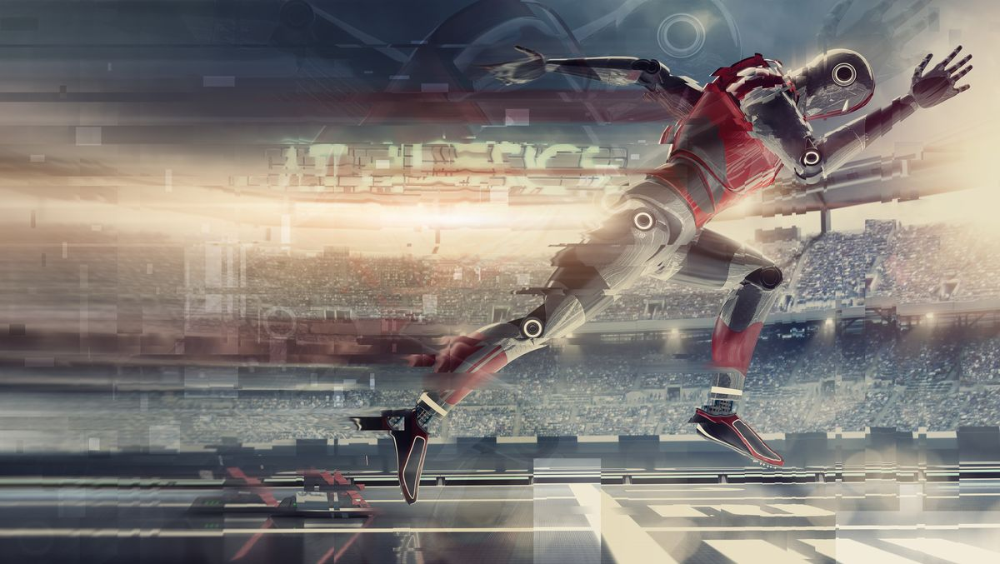
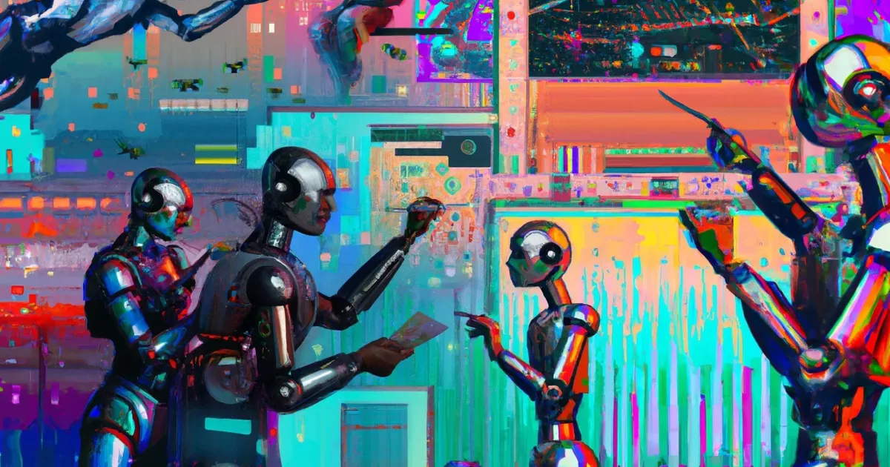
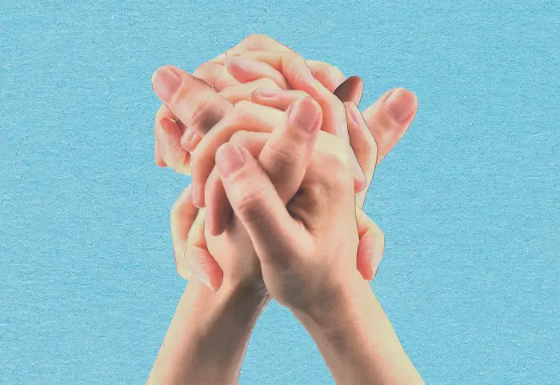

Is AI Art Destroying Creativity?
And Should we be Worried?
A look into the emmerging field of AI Art
and how the industry is reacting to it.
AI has without a doubt been the hottest thing in the tech space for the past few years and its growth in power and controversy has only accelerated. In 2020 Chat GPT amazed the world with its ability to converse with humans and just 4 years later AI generated art is winning competitions in major artistic fields. The 2020s AI space-race is in full-swing as every major company from Google to Amazon search for new ways to monetise and monopolize AI, and the trend right now is art.
So what can this technology actually be used for? How does it affect the world of art? How does it affect the real people who work in art? How does it even work, are there ethical or legal implications? Is it even necessary? And what does it mean for the human spirit of creativity? Read on to explore all of these questions and more!

The Good
As it is a widely contentious issue, AI art has both supporters and detractors. Due to its online nature, most of the supporters have come from places like Twitter and Reddit with the most common positive sited being the democratization of art. Through use of AI technology anyone can become an amazing artist and reap all the mental health benefits that come with it, or so they say.
Another way it improves accessibility is through cost. AI art can be created by anyone with internet access with the largest barrier to entry being purchase of "credits" or a subscription which generally don't cost too much.

The other most common angle from proponents of the technology is efficiency. What would normally take a human many hours can be accomplished by AI software in seconds or minutes. This can be useful for gathering inspiration for your own creations or for getting quick feedback from a client, but can also be used to create promotional images or assets in a much shorter amount of time.

The Bad

From the other side of the aisle the main complaint about AI art is very clear: the loss of jobs. Many people spend their whole lives training and practicing their craft to get jobs they love, and now those jobs are being taken by pieces of software. Not only are their jobs being stolen but also their work. AI art technology needs to be trained to create its art and that means feeding it pre-existing art, often without the creator's consent.

There are also concerns about the quality of the work. As the technology is still being developed, the quality of work it produces is often below standard and can contain uncanny defects like incorrect number of fingers and other details a human artist would simply not get wrong.
The issue of the technology being used for evil is also a pressing one. Yes, AI art might let anyone be an artist, but is that necessarily a good thing? What are the risks of realistic misleading or slanderous images and videos being produced on-mass by people who would otherwise have no avenue of doing so?
The Ugly
Lastly, we come to the endgame of the technology, can AI really produce infinite images and videos with no repercussions at all? If this technology can produce art far faster than any human but also needs increasingly more data to create art, what happens once it starts training off its own art?
And on a more philosophical note, what does it really mean to be “creative”? Is art just another cog in the wheel of the increasingly capitalistic, for-profit society we live in or is it something fundamental to the human experience? Is sacrificing the human element of art really worth it to increase the size of the wealthiest peoples pockets even more?
Conclusion
In conclusion, the world of AI art is still in its infancy and the way we as consumers respond to it and the way its developed will change its impact on the industry and creativity itself. Its important to remember that anywhere AI art is used is a place a real humans experience and passion for art could have also been used, yes it can be used to supplement this but should it entirely replace it?